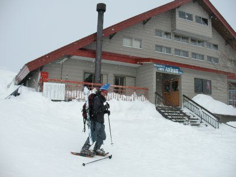
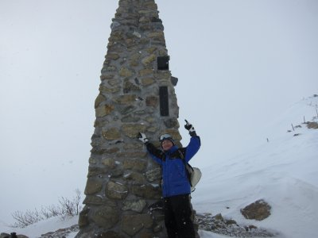

八方池スノーシュー | 2013年1月 幹事：max |
|---|---|
| 寒い冬。皆さんは何をして暇を潰して居るでしょうか。暖かい部屋でテレビも良いですが、寒い外に出掛けませんか？ この時期だけの限定参加メンバー＜MAX＞と、今年も寒い山にスノーシューにお出かけです。 今回は、八方尾根スキー場上部から唐松岳方面へ、行けるところまで行こう！ 前日、他の友人達と近くのスキー場でスキーをし、MAXと居残りでもう一日。お酒も沢山飲みました。 | |
|  出発の八方池山荘 |  本来は登山道らしき道を登ります |
| さて、八方尾根スキー場で上まで行ける分のリフト券を購入。行けるところまではリフトを使います。 出発は、標高1830mの八方池山荘。 雪が降ってます。これから向かう唐松岳方面は雲の中です。マジですか。 唐松岳までは夏に登山で歩いていますが、冬はありません。山荘からの道も、何となく誰かが歩いた後がある道が有る程度です。 太陽はうっすらと見える程度で、尾根伝いの道は風にさらされていました。時折突風が吹いて、周りがまっ白になります。 スノーシューでもキツイ斜面を登り、一個目のケルン（石神井ケルン標高1974m）に到着。他に誰も居ないと思っていたら、山スキーらしき人が一人、後から付いてきました。我々が休憩している横を悠々と追い越していきます。 | |
|  第２ケルン |  あそこに八方池が見えるハズなんです |
| そのまま第２ケルンを通過して八方ケルンまで進みますが、視界は時たま開ける程度で基本はまっ白です。そして突風。 八方池（標高2060m）まで進みましたが、当然ながら雪で覆われた池は見えず、その向こうに見えるはずの山も雲で見られず、時折の突風が寒くて本日はココまでにしました。 あまりの寒さに、第2ケルン近くになる便所の影に避難し、持ってきたお湯でコーヒー集会を。 温かい珈琲はありがたいが、手を出していたら、かじかんで動かなくなってきて、急いで手袋をはめようとしても、指が動かずなかなかはめられない！ マジ、凍傷になるかと思いましたが何とか無事に下山しました。 たった片道2．5km、標高差200mチョットでしたが、冬山を経験できたみたいで楽しかったです。 | |
 休憩した便所。中には入れません |  厳しい戦いだった・・・(笑 |
| コメント＆写真 ｂｙ べっしー | |